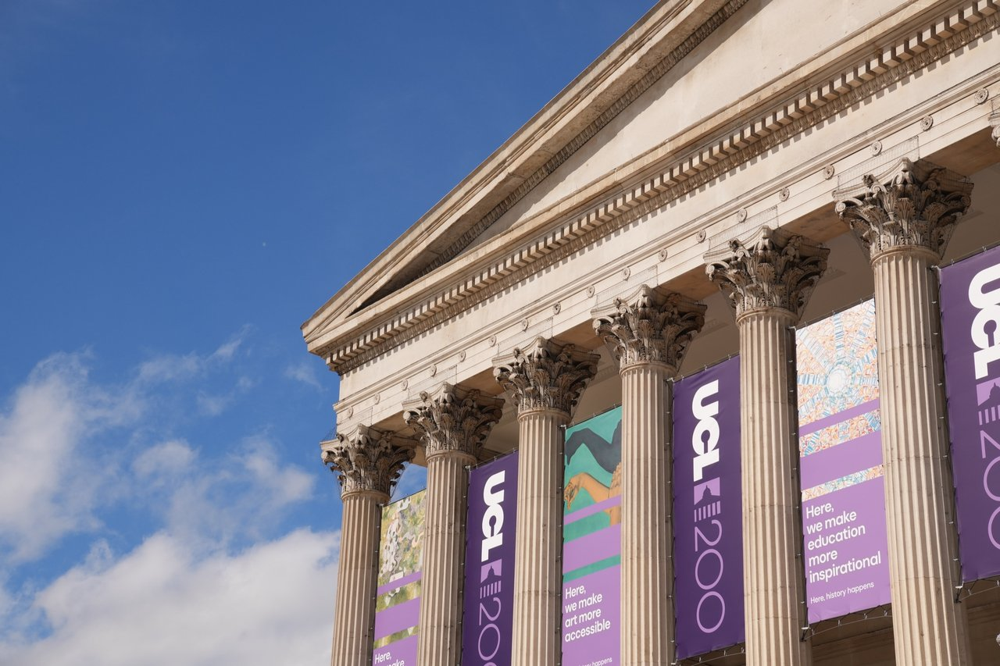
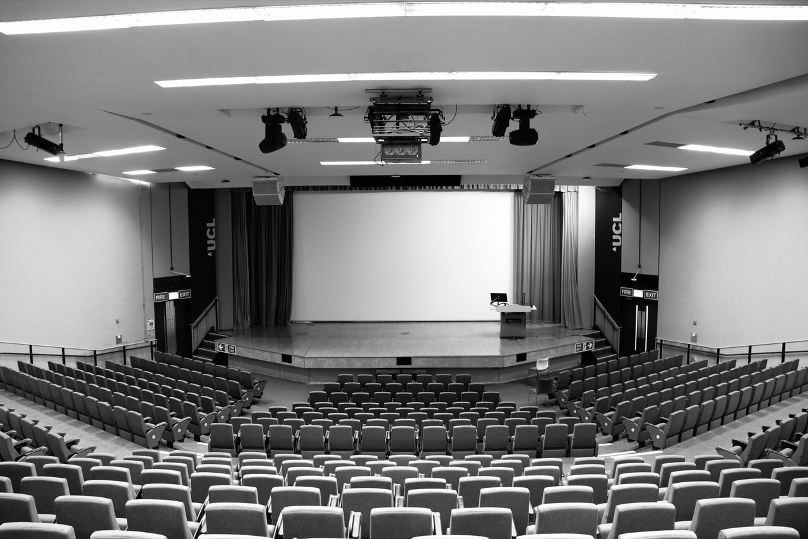
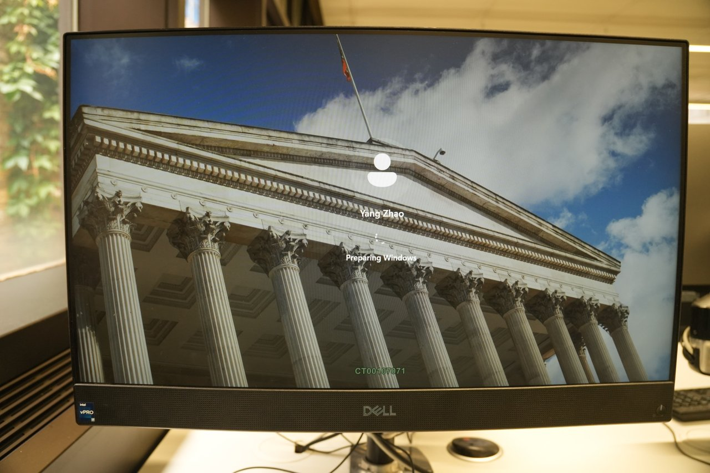
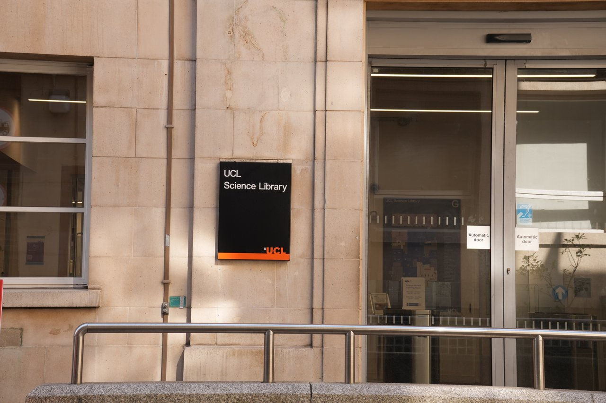
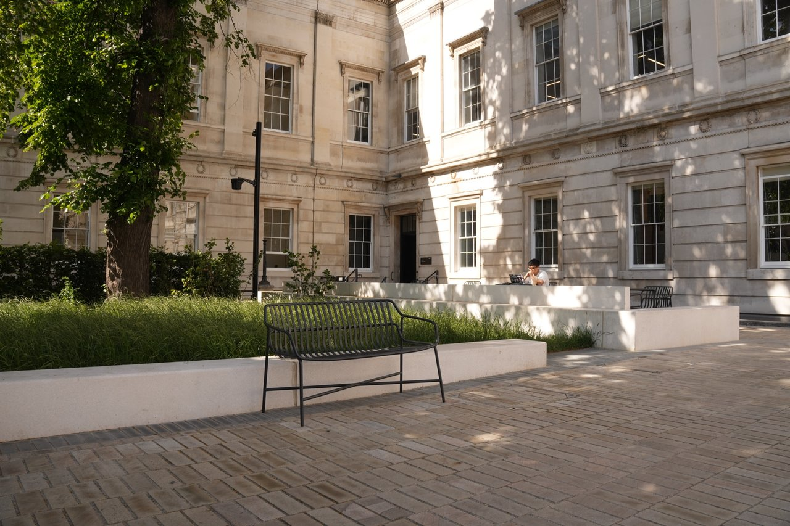

同一组照片、同样的真实图文，六种摆法逐页展示。每页左上角标着模式名，往下滑逐一对比。
模式一 · 图下注 — caption below

模式二 · 图左文右 — panel right
主楼一角
12/06/2026 · Main Quad
200 周年限定横幅的主楼。
模式三 · 图右文左 — panel left
Theatre
Logan Hall

模式四 · 题记式 — epigraph above
Logging in

模式五 · 页边批注 — marginalia
最熟悉的地方。
（页边小注占位——将来这里是你的一句话）

模式六 · 独立文字页 — text page + pure photo page
尽管 UCL 我已经熟悉到没什么可拍的了，
可是还是拍了许多张主楼的照片。

六种模式可以只选一种贯穿全站，
也可以按照片有没有文字自动切换（有长文用面板、只有一句用图下注）。
Yang
→ Back to Sampler Index